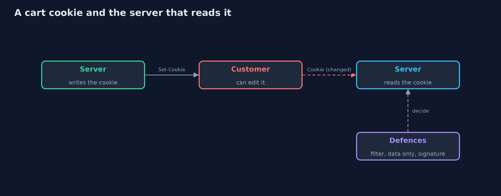
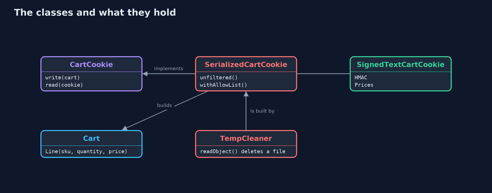
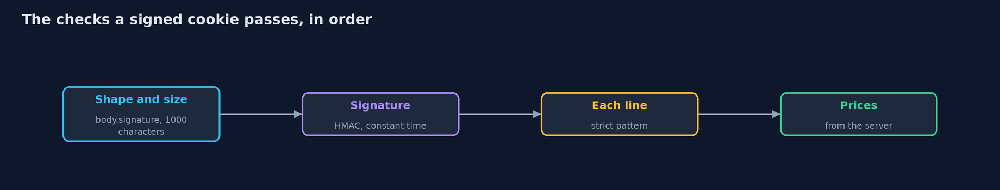
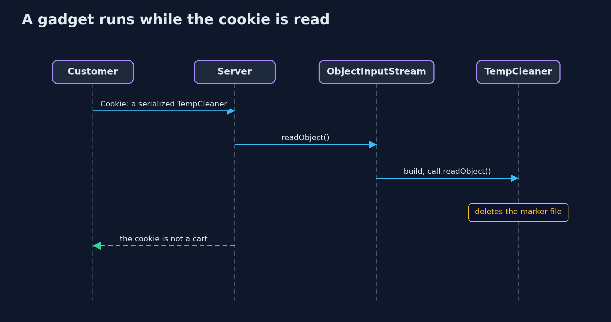

Insecure Deserialization and Its Defences
src/main/java/com/jk/explore/security/deser/
├── Attacker.java What a customer with a text editor and the same libraries can build: a cookie that is not a cart
├── Cart.java The shopping cart as the first version of the shop kept it: a Java object, serialized into the cookie, <em>with the price of each line</em>
├── CartCookie.java Turns a cart into the text of a cookie and back
├── CartRefused.java The cookie was refused
├── DeserializationDemo.java Runs the shopping cart cookie story in four numbered acts and prints exact, repeatable results
├── SerializedCartCookie.java The cookie is the cart, serialized by Java and encoded in Base64
├── SignedTextCartCookie.java The fixed design: the cookie holds <em>data only</em>, {@code SKU x quantity} pairs as text, and a signature
└── TempCleaner.java A harmless-looking class from a "library already on the classpath": a task that removes a temporary file, and does it <em>while it is being read</em>
Java serialization lets the bytes decide which classes are built and which code runs while they are read, so a cookie of serialized objects is a program written by the customer; filter the classes before they are built, and better, send data only and sign it.
A shopping cart is kept in a cookie, and the easy way to do that in Java is to serialize the cart object and put the bytes, in Base64, in the cookie. When the cookie comes back, the server
calls readObject. But the bytes name the classes to build, and some classes run code while they are being read. A customer who edits the cookie can name any serializable class on the
server's classpath, and a chain of such classes (a gadget chain) can end in real damage. That is insecure deserialization.
The defences, in the order this project shows them:
- An allow-list ObjectInputFilter, set on the stream before reading: only the classes of a cart may be built, with limits on depth, size and number of objects. The check happens before the class is built.
- Do not trust what the cookie says about prices: a filter stops classes, not lies.
- Data only: a plain text format with no classes, validated line by line, with the prices looked up on the server.
- A signature (HMAC) checked, in constant time, before anything is parsed.
Maps to: OWASP Top 10 (2025) A08 Software or Data Integrity Failures · CWE-502 · OWASP ASVS 5.0, the validation and data protection chapters.
The idea in everyday terms
Think of a kit that arrives in the post with a note: "assemble as shown". If the shop assembles whatever is in the box, a customer can post a box whose parts, once put together, do something else entirely. The fix is a packing list: only these parts may be unpacked, and better, no kit at all, just an order form that the shop fills in itself.
The scenario
An online store keeps the cart in a cookie. The demo uses real Java serialization, a class named TempCleaner that stands for a gadget from a library
(it deletes a temporary marker file while it is being read, which is as far as the demo goes), and the JDK's own ObjectInputFilter and HMAC.
Run
./gradlew run
The demo tells the story in 4 acts, each printing exact numbers that the tests check:
| Act | What it shows |
|---|---|
| 1. A cart in a cookie | The cart is serialized into a cookie and read back: two lines, 9200 cents. |
| 2. The cookie decides what the server builds | A forged price is believed, and a cookie holding a TempCleaner deletes a file while it is being read, before the server sees it is not a cart. |
| 3. An allow-list filter names the classes a cart is made of | The filter refuses the TempCleaner before it is built and the marker file survives, but a cart with a forged price is still accepted. |
| 4. Data only: names and quantities, signed | The cookie holds text and an HMAC; a serialized object, a changed quantity and unsigned text are all refused, and prices come from the server. |
Test
./gradlew test
10 tests in DemoRunsTest, DeserializationTest. The temporary marker file's name is random and never printed, so the demo prints the same text on every run.
What the simulation got right, and what it left out
Serialization, the filter and the HMAC are the JDK's real ones. The gadget is a class written for the demo that deletes a marker file in readObject, which is how real gadgets start.
The marker file is temporary and its name is never printed.
Technologies and versions
Every version below is pinned in the project's build files and was the latest stable release when the project was built.
| Technology | Version | Used for |
|---|---|---|
| Java | 25 | the language and runtime; a Gradle toolchain finds or downloads the JDK |
| Gradle | 9.8.1 (wrapper) | build and run; nothing to install, the wrapper downloads it |
| org.junit.jupiter:junit-jupiter | 6.1.3, set by junit-bom | JUnit 5: the tests (tests only) |
| org.junit.platform:junit-platform-launcher | 6.1.3, set by junit-bom | JUnit platform launcher, which Gradle needs to run the tests (tests only) |
Learning Material
| Document | What it is for |
|---|---|
| Problem statement | the situation and what the project must show |
| Prerequisites | what you need to know first |
| Insecure Deserialization and Its Defences, explained | the acts in prose |
| Session guide | a one-hour lesson with exercises |
| Animated walkthrough | the acts step by step |
| Threat model | what is protected, who could harm it, and how, using STRIDE |
| Spec | what this project must be true of |
| Expected output | the golden demo output every test and every port checks against |
The idea in one picture
The customer holds the cookie between two requests, so it can be changed.

Where each piece sits
Two readers of the same cart: one builds objects, the other reads text.

How the data moves
Nothing is parsed before the signature passes.

Who calls whom, in order

What it costs
- An allow-list needs upkeep. A new field or class in the cart must be added to the list, or honest carts are refused.
- Filters stop classes, not lies. A cart of the right classes with a price of one cent is still accepted.
- Serialization formats are fragile. Changing a class breaks old cookies, which is another reason to avoid it for data that leaves the server.
- Signing needs a key, kept out of the code, rotated, and shared by every server that reads the cookie.
- Server-side sessions avoid the problem: the cookie holds only a random id, and the cart stays on the server.
When this is too much
If the cart can live on the server, keep it there and put only a session id in the cookie. Nothing needs deserializing then. Do not try to deny-list known gadget classes: new chains appear with every library update.
Where you have already met this
new ObjectInputStream(request.getInputStream()).readObject()in older code and tutorials.- Base64 text in cookies or hidden fields that starts with
rO0(the Base64 of Java's serialization header). - Tools that generate gadget chains for common libraries.
- A finding titled "Deserialization of Untrusted Data" with CWE-502.
Where this sits
This project is in web-security. It follows xml-and-template-injection: another reader that builds things from instructions in its input.